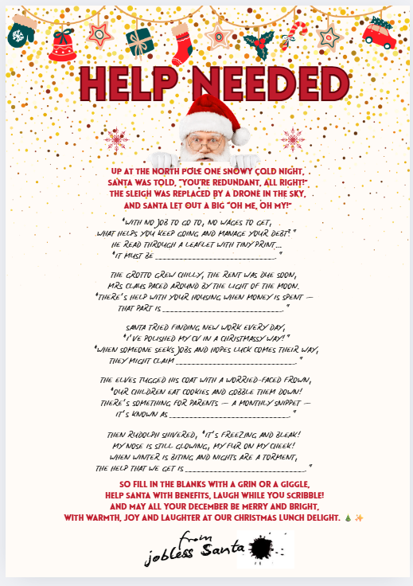
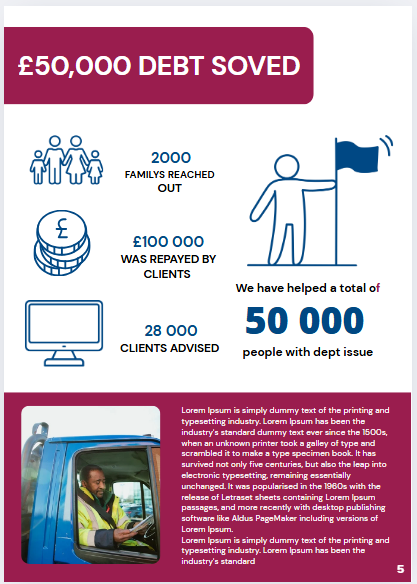
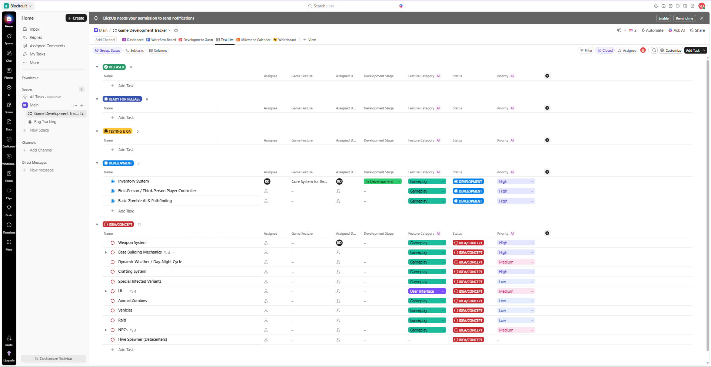
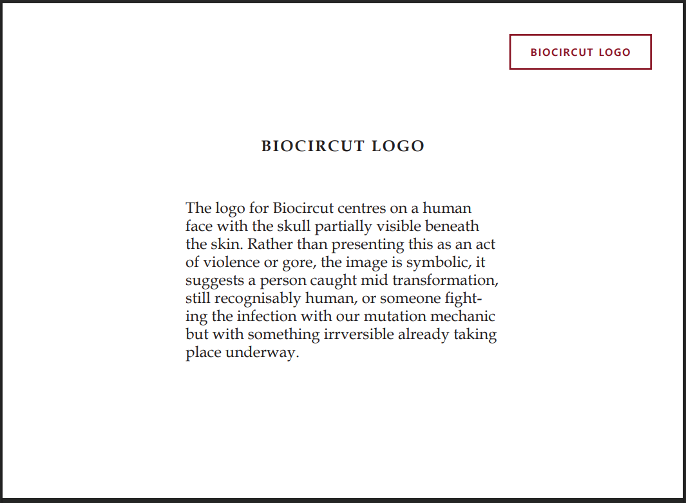
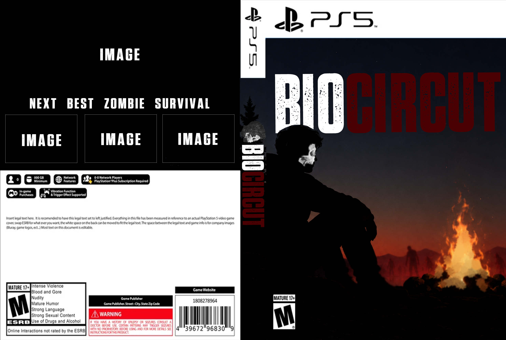
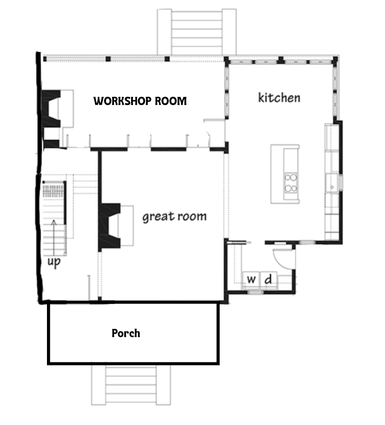
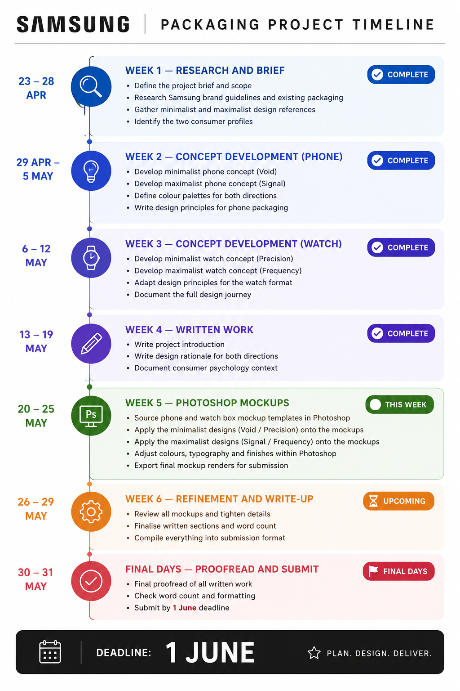
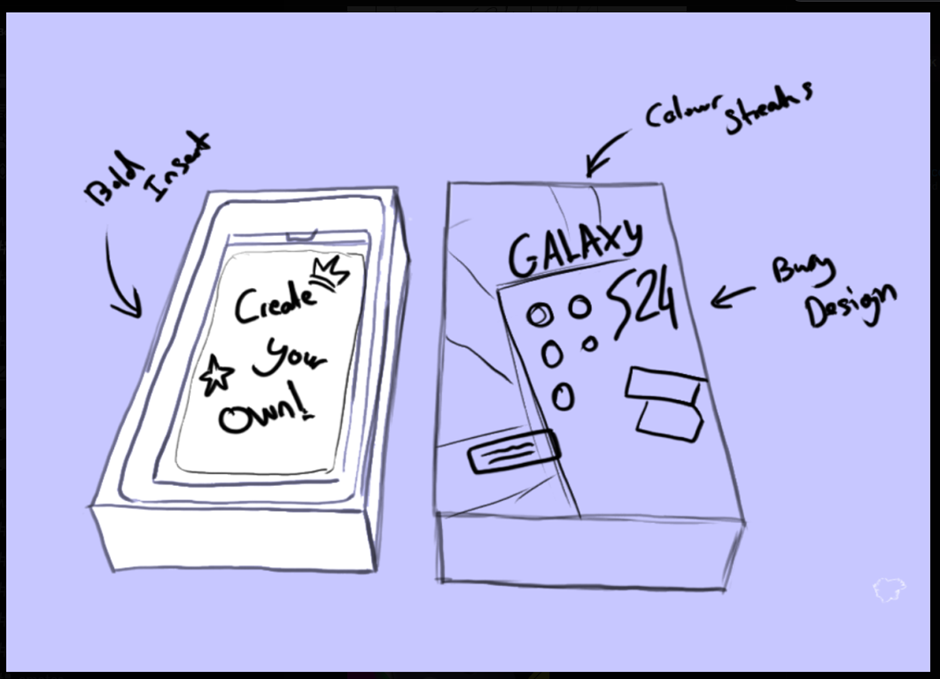

Year 3
Work negotiated placement
Introduction
This report provides a comprehensive account of my placement at Citizens Advice Winchester, which commenced at the end of November 2024 and concluded on January 7th, 2026. The placement formed a critical component of my Level 3 Digital Media Design qualification, offering an invaluable opportunity to apply theoretical and physical knowledge gained throughout my studies within a real world professional environment. Citizens Advice Winchester operates as part of the national Citizens Advice network, a charitable organisation dedicated to providing free, confidential, and impartial advice to individuals facing a diverse range of issues including welfare benefits, debt management, housing, employment, and consumer rights. The organisation plays a vital role within the local community, supporting vulnerable individuals and families whilst advocating for systemic change to address broader societal inequalities. My placement at Citizens Advice Winchester represented a significant milestone in my professional development, bridging the gap between academic learning and practical application within a charity. Unlike commercial design environments, working within a charitable organisation presented unique considerations, particularly regarding the ethical dimensions of communication design and the responsibility of accurately representing sensitive information to diverse audiences. The placement enabled me to understand how design functions as a crucial tool for social impact, facilitating access to essential services and amplifying the voices of marginalised communities and people in need. This experience has shaped my understanding of design's potential to drive positive change beyond purely aesthetic or commercial objectives.
Prior to commencing my placement, I attended an induction day at Citizens Advice Winchester, which provided essential familiarisation with the organisation's physical environment, operational procedures, and team structure of how they work. Upon arrival, I was given a comprehensive tour of the premises, during which I was introduced to various members of staff, with particular emphasis on the debt advice team, who i would be sharing a seat beside whilst creating my graphics work, who constitute a significant portion of the organisation's workforce. This initial introduction proved valuable in understanding the scope of Citizens Advice's service and the collaborative nature of their operations. I was also afforded the opportunity to observe a team meeting focused on development, during which staff members discussed financial performance reports and strategic planning for expanding their capacity to support clients within the local community of Winchester. This early exposure to internal discussions illuminated the operational realities of running a charitable advice service, balancing objectives with financial sustainability.
The physical workspace at Citizens Advice Winchester presented a welcoming and comfortable environment,with a supportive, vollenteer atmosphere. Staff food included a shared refrigerator and communal provisions of snacks and fresh fruit and other goodies, available for all, employees and volunteers throughout the working day. These small considerations contributed to an inclusive workplace culture that valued staff wellbeing. I was instructed on the building's security and safety protocols, which, whilst relatively informal, maintained necessary record keeping for safeguarding purposes. The sign in procedure required manual documentation on paper, recording one's initials, time of entry, and any subsequent exits from the building, essential information for fire safety and emergency roll call procedures but i was told this happens rarely. I was issued a temporary access pass, which granted me independent entry and exit privileges, as well as access to facilities including restrooms, enabling me to navigate the workspace autonomously throughout my placement duration. The initial phase of my placement was dedicated to comprehensive induction and mandatory training, reflecting Citizens Advice's commitment to maintaining rigorous professional standards and safeguarding both staff and clients. Upon commencing my role, I was required to sign formal documentation and thoroughly review extensive workplace policies and procedures. This foundational process was essential in establishing my understanding of the organisation's operational framework and the specific responsibilities associated with my position. Over the subsequent weeks, I completed a structured training programme encompassing six core areas. Cyber Security for Local Citizens Advice, Data Protection, An Introduction to Safeguarding for Local Citizens Advice, Senior Managers and Certification Regime (SMCR) for Everyone, introduction to equity, diversity and inclusion and An Introduction to Health and Safety for Local Citizens Advice. Each module addressed critical aspects of professional practice within the advice sector, ensuring that all staff members, regardless of their specific role, maintain awareness of legal, ethical, and operational requirements. This training period, whilst initially appearing monotonous to my design focused role within the company, proved instrumental in developing an understanding of the context within which my creative work would operate. The modules provided essential knowledge regarding data handling, client confidentiality, vulnerable person protocols, and digital security all factors that directly influence design decisions within organisations handling sensitive personal information. Understanding these frameworks enabled me to approach subsequent design projects with appropriate consideration for compliance, accessibility, and ethical communication. Following the completion of my training, I transitioned into active project work, contributing to various design initiatives that supported Citizens Advice Winchester's communication and fundraising objectives. The placement continued beyond the initial on site period, with ongoing work completed remotely, demonstrating the evolving nature of contemporary professional practice and the increasing prevalence of flexible working arrangements within the creative industries. This report will examine the training undertaken during my placement, analyse the skills and knowledge developed throughout this experience, and reflect upon the placement's contribution to my professional growth as an upcoming design practitioner.
Initial Design Task Christmas Party Poster
During the early stages of my training period, I was assigned my first practical design task. creating a poster for Citizens Advice Winchester's private in house Christmas party intended for staff and colleagues. This project provided an immediate opportunity to apply my creative skills within a professional context, of course in a more informal capacity than the organisation's typical communication materials. My supervisor, Liv, briefed me on the creative direction for this piece, explicitly requesting a design that diverged from the organisation's established brand guidelines. Rather than keeping to the formal, professional aesthetic typically associated with Citizens Advice materials, she encouraged me to develop something fun, exciting, and festive that would capture the spirit of the seasonal gathering without it saying Christmas for the other members who don't celebrate it, just something fun and exciting that includes Santa for the festive season. Liv provided me with specific copy text centred around a humorous narrative theme, a Santa Claus who had lost his job. This unconventional concept offered creative freedom to explore a more playful visual than I would typically use in client facing charity communications. In developing the poster design, I made deliberate typographic choices to enhance the informal, personable tone of the piece. For the fill in the blank sections of text, I selected a handwritten typeface, which conveyed warmth and accessibility whilst complementing the light hearted style of the poster. In contrast, the main title was rendered in bold, red typography, immediately drawing attention and reinforcing the Christmas theme through colour association. To further enhance the authenticity of the letter from Santa concept, I incorporated a signature element at the bottom of the poster, positioned as though Santa himself had personally signed the invitation. This detail added a finishing touch that strengthened the overall narrative cohesion of the design.

Organisational Understanding
The training programme I undertook covered diverse aspects of professional practice within Citizens Advice, extending beyond my specific design focused role to encompass broader organisational functions and the advice services provided. This approach to induction ensured that all staff members, regardless of their departmental responsibilities, possessed a foundational understanding of the organisation's mission, operational framework, and the complex social issues addressed through their client services. The knowledge acquired through these training modules proved useful in preparing me for subsequent design work, particularly the creation of the organisation's annual impact report, which required accurate representation of Citizens Advice Winchester's achievements, service statistics, and client outcomes throughout the year. Before commencing my placement, my understanding of Citizens Advice was relatively limited. I had conducted a small amount of research to establish a basic comprehension of how the charity functioned and the mechanisms through which they provide support to individuals experiencing various difficulties. However, this initial research offered only a surface level perspective on the organisation's work. The structured training programme significantly deepened my understanding, revealing the complexity of advice and the intersecting challenges faced by clients seeking support. This enhanced contextual knowledge enabled me to approach design projects with greater knowledge to the organisation's values, the vulnerabilities of their client base, and the importance of communicating their impact accurately and ethically to stakeholders, funders, and the wider community who view the impact report online.
Brand guidelines
During my second week at Citizens Advice Winchester, I was instructed to undertake a thorough review of the organisation brand guidelines. This task was essential in developing an understanding of the visual standards and design principles that Citizens Advice strives to maintain across all communication materials. The guidelines provided detailed specifications regarding composition, imagery usage, typography, colour application, and logo placement, ensuring visual consistency across the entire national network of local Citizens Advice services operating throughout England. This standardisation is crucial for maintaining brand recognition and professional credibility across diverse locations and audiences. The brand guidelines had specific parameters for photographic imagery, limiting acceptable visual styles to two distinct approaches, high quality photography depicting authentic moments of people engaging naturally in everyday situations, or alternatively, silhouette illustrations of people, objects or buildings. These constraints serve to create a cohesive visual language that balances human connection and realness within the charity with client confidentiality, particularly important given the sensitive nature of the advice services provided. Logo usage was similarly prescribed with considerable restrictions, ensuring that the Citizens Advice identity appears consistently across materials produced by different branches in various cities throughout the country. The guidelines document itself was remarkably extensive, spanning approximately 73 pages of detailed instructions outlining both permitted practices and things not to do regarding brand application. i asked liv i can showcase these brand guidelines in my report and she said that because these are only allowed to be use within the brand itself and not to be shared outside of citizens advice so i have to respect that.
Typography specifications were particularly limiting, only allowing three specific weights within the Open Sans typeface family.
Open Sans Extrabold
This was designated exclusively for large scale text of twenty points or above, typically employed in titles and primary headings.
Open Sans Bold
was used for subheadings and section divisions, providing structure within layouts.
Open Sans Bold
This served as the standard for body copy, general text, and footnotes, with the additional requirement that main body text should never appear smaller than twelve points to ensure readability and accessibility. These typographic restrictions, whilst initially appearing limiting from a creative perspective, ultimately facilitated design consistency and reinforced the organisation's professional, accessible identity across all branches.
Christmas Card Design for Stakeholders
During my third week of training, I received a second design brief the creation of a Christmas card to be distributed to Citizens Advice Winchester's stakeholders and investor clients. Unlike the informal internal party poster created earlier, this project required strict adherence to professional standards and brand identity, as the card would represent the organisation in external communications with key partners and funders. To ensure the design maintained visual consistency with Citizens Advice's national branding, I referred extensively to the organisation's official brand guidelines within their own intranet, which has colour palettes, typography, logo placement, and overall aesthetic across all local Citizens Advice branches throughout England. This project marked my first experience working within formal brand constraints, requiring me to balance creative expression with corporate identity requirements. In developing the design, I incorporated the designated Citizens Advice colour scheme, positioning the organisation's logo in the bottom left corner of the composition a standard placement convention clearly outlined within the brand guidelines and consistently applied across Citizens Advice materials. I selected a maroon red as the dominant colour in the background, creating visual contrast through the incorporation of white snowflakes and white typography displaying the message Merry Christmas. This colour combination maintained festive associations whilst remaining aligned with the organisation's professional visual identity. The central illustration featured a Christmas tree rendered in pastel tones, which provided a softer, more approachable aesthetic whilst complementing the bolder maroon and white colour scheme. The overall composition achieved a harmonious balance between seasonal warmth and company professionalism. Upon completion, I presented the design to Liv, my supervisor, who expressed strong approval of the outcome. The design was adopted as the official Christmas card for Citizens Advice Winchester and was distributed to stakeholders and clients throughout December, representing my first professionally implemented design work within the organisation.

Timeline
Citizens Advice Winchester operates primarily through voluntary contributions, and this organisational structure was reflected in the flexible approach to project deadlines and work scheduling. Unlike commercial environments where strict timelines and client deadlines dictate workflow, my placement operated without rigidly defined completion dates for assigned tasks. Liv briefed me on the primary project, the creation of the organisation's annual impact report and provided two physical examples of previous reports to serve as reference materials for understanding the expected format, content structure within the report, and visual approach. She clarified that this report would constitute my main ongoing project throughout the placement duration, whilst simultaneously assigning additional smaller design tasks as they arose within the organisation. Given the absence of an externally imposed deadline, I recognised the importance of establishing my own workflow structure to ensure consistent progress and timely completion. I set myself a personal target of completing at least two pages per day, providing a manageable pace that would allow for thorough design development whilst accommodating the learning curve associated with working within brand guidelines and organisational requirements. However, I quickly recognised that certain pages demanded significantly more extensive work. Whether due to complex data visualisation, intricate layouts, or the need for more information on how they help these clients out, using (SD12) this could be because it was directed towards specific clients like people who are struggling with homes or just people who need to sort out debt. For these more demanding pages, I adjusted my expectations, substituting the 2 page daily target for a single completed page to maintain quality standards. Consequently, my average output settled at approximately three to four completed pages per week, balancing productivity with the necessity for careful, considered design work that accurately represented Citizens Advice Winchester's achievements and impact. This was my original plan.
Starting the report
Following the completion of my initial training period. On Tuesday, 11th February 2025, Liv tasked me with commencing the planning phase for the annual impact report. She granted me creative freedom to approach this stage in whichever manner I deemed most effective. I elected to begin by sketching multiple front cover concepts, as establishing a strong visual direction for the cover would inform the aesthetic approach for the entire document and ensure stylistic consistency throughout. During that afternoon, I developed six distinct front cover designs, presenting Liv with a range of visual options from which she could select the direction that best aligned with the organisation's communication objectives and brand identity.


Week 5 day 2
From the 6 concepts presented, Liv expressed preference for two designs, Design 3 and Design 6, with a stronger liking towards Design 3 as the primary choice for the current year's impact report. Recognising that she also liked Design 6, I proceeded to develop a finalised version of this alternative concept based on my original sketches. I presented this completed design to Liv, suggesting that it could be retained and utilised for Citizens Advice Winchester's 2027 impact report, providing the organisation with a prepared design asset for future use.


Week 6 day 1
On the first day of week 6 at Citizens Advice Winchester, I started the practical design and layout work for the impact report, beginning with two foundational elements, the contents table which I will be updating over the weeks and the opening introductory page. The contents table served as a navigation for the document, providing readers with a clear overview of the report's structure and enabling easy access to specific sections detailing different aspects of the organisation's work and achievements throughout the year. This page was quite formal, but I added artistic flare with the hearts, and I used bold typography to ensure accessibility for diverse reading audiences (SDG12), this could be stakeholders, funders, partner organisations, and members of the public. The first page of the report focused on displaying Citizens Advice's core mission and ongoing vision, this page has statements that have guided the organisation's work for decades. This introductory content showcases a glimpse of the achievements that citizens advice has been doing for years. The mission statement emphasised Citizens Advice's commitment to providing free, confidential, and impartial advice to anyone who needs it, whilst the vision outlined the organisation's aspirations for a society where everyone has access to the information and support necessary to address their problems. Designing this opening page required balancing textual prominence with visual engagement, ensuring that these essential messages were communicated clearly whilst maintaining reader interest. I wanted each page to have imagery to make the page more aesthetic and easier to digest for the public.


Week 6 day 2
On the second day of week 6, whilst continuing my work on the impact report, I received an additional design brief that required immediate attention. Liv requested the creation of a Facebook post communicating Citizens Advice Winchester's opening and closing schedule over the Christmas holiday period. The post needed to clearly inform the public that the service would remain operational until December 22nd, close on December 23rd, and remain closed from December 24th through January 2nd before resuming normal operations. This communication served a critical practical function, ensuring that clients and community members planning to access advice services were aware of the temporary closure and could make alternative arrangements if necessary, or alternatively, seek support before the closing commenced. Liv requested that the post incorporate a Christmas flare to acknowledge the seasonal timing, whilst simultaneously avoiding overtly Christmas specific imagery or references that might exclude or single out individuals who do not celebrate the holiday for religious, cultural, or personal reasons. This requirement reflected Citizens Advice's commitment to inclusive communication practices, recognising the diversity of the communities they serve (SDG12). To navigate this balance, I focused on incorporating winter seasonal elements rather than explicitly religious or Christmas specific Imagery, i used visual motifs such as the wreath plants also used winter colour palettes, and festive typography that evoked the celebratory atmosphere of the season without centring a particular cultural or religious tradition. The resulting design maintained a warm, approachable aesthetic appropriate for the holiday period whilst ensuring that the essential information regarding service availability remained the primary focus, clearly legible and accessible to all audiences. This project reinforced the importance of inclusive design practices, particularly within public service organisations serving diverse populations with varying needs and backgrounds.

Week 7 day 1
During this particular week, Liv assigned me an alternative project as a temporary break from the ongoing impact report work. This shift in focus provided valuable variety in my design practice and prevented creative fatigue from working exclusively on a single large scale document design. The new brief centred on creating a promotional poster for a Money Skills event, a charitable initiative funded by external partners and delivered by Citizens Advice Winchester to support people in a community. The programme offered free educational sessions to local groups and organisations, covering essential financial management topics including budget creation, understanding everyday costs, accessing available financial support mechanisms withing citizens advice, and exploring various saving options. These sessions were designed to empower participants with practical knowledge and skills to improve their financial wellbeing and make informed decisions regarding their personal finances througout the winter season. The design brief specifically requested a poster that visually communicated the concept of saving money, whilst maintaining strict adherence to Citizens Advice's established brand guidelines. This requirement necessitated balancing creative visual communication with corporate identity constraints, ensuring the poster would be immediately recognisable as official Citizens Advice material whilst effectively conveying the event's value to potential participants. I approached this challenge by incorporating imagery and visual metaphors associated with financial savings,such as piggy banks, coins, rendered within the approved colour palette and typographic system outlined in the brand guidelines. The poster needed to appeal to diverse audiences across different community groups and organisations, requiring clear, accessible design that communicated both the educational nature of the sessions and their practical benefits.


Week 7 day 2
Following the completion of the Money Skills poster, I returned to the ongoing impact report project, focusing my attention on a particularly significant section. The Chair's Report. This component of the annual impact report holds considerable importance within the document's structure, as it provides a personal, authoritative perspective from the individual holding the highest position within Citizens Advice Winchester's local board. The Chair's Report serves to highlight the leadership vision guiding the organisation, acknowledging key challenges and achievements from the reporting period, and contextualising the organisation's work within broader social, economic, and political developments affecting the communities they serve. The page design needed to appropriately convey the authority and credibility of this section whilst maintaining visual consistency with the remainder of the report it also includes a little section down below showcasing a signature.
In addition to the Chair's Report, I developed the Our Impact section a substantial and visually prominent component of the annual report. This section highlighted three major achievements or focus areas that Citizens Advice Winchester took pride in accomplishing during the reporting year. Each of these featured represented significant milestones in the organisation's service, demonstrating outcomes resulting from their work and illustrating the real world difference made in clients lives and the broader community. The design approach for this section required careful consideration of visual hierarchy and information presentation. Each of the three highlighted achievements needed equal prominence whilst remaining visually distinct, allowing readers to quickly grasp the significance of the organisation's impact. This section functioned strategically as an executive summary of sorts, providing stakeholders and investors with an accessible,overview of how their financial contributions had been utilised effectively to deliver meaningful outcomes. For funders and investors reviewing the report, this section offered immediate evidence of return on investment not in financial terms, but in social value.


Week 8 day 1
During this week, I designed a visually driven page that provided a brief overview of Citizens Advice Winchester's core advice services. This page prioritised visual communication over extensive explanation, incorporating imagery and graphical elements to convey key service areas quickly and effectively. A client quote was positioned at the bottom of the page, adding an authentic human voice and emotional resonance to the information presented this was to balance out sections so it wasn't too text heavy for the general public's viewing.
I also developed a page dedicated to showcasing the organisation's debt advice achievements, presenting statistical data on the total amount of debt successfully resolved and the number of clients supported throughout the year. A client testimony was included beneath the statistics, showcasing the real world impact of these services. This page served to celebrate tangible successes and demonstrate clear, measurable outcomes to stakeholders and funders.


Week 8 day 2
For this section, Liv requested that I squish several smaller topic areas onto a single page due to their interconnected nature and relatively limited individual content. This page addressed 2 critical issues affecting the local community, poor housing conditions, energy Crysis/ affordability concerns, and the broader cost of living crisis impacting clients seeking Citizens Advice support. To effectively communicate the scale and trends of these issues, I incorporated a graph visualising relevant data, providing stakeholders with clear, accessible evidence of the challenges facing Winchester residents and the demand for associated advice services.
Winchester provides to clients navigating the complex benefits system. This section covered disability benefits guidance, Career Allowance, employment support services, and Universal Credit management assistance. The page aimed to communicate the different depth of welfare related advice available whilst presenting this information in an accessible format that would reassure stakeholders of the organisation's capacity to support vulnerable clients through increasingly complicated process.


Week 9 day 1
This week, I developed a page addressing family related issues that Citizens Advice Winchester supports clients with, including relationship breakdowns, childcare concerns, and domestic situations requiring specialist guidance. A testimonial quote from a family who had received assistance was incorporated to provide authentic insight into the service's impact on real lives i also wanted this page to rely heavily on imagery to make it feel personal.
Additionally, I commenced work on the Specialist Advice section a diverse component that includes various focused topics addressed throughout the year. Given the size of specialist services, multiple smaller subject areas were combined efficiently. The first page within this section concentrated specifically on mental health support, acknowledging the growing demand for advice intersecting with psychological wellbeing and the organisation's response to this critical need.


Week 9 day 2
On the second day of this week, I completed the final two pages of the Specialist Advice section. The first of these pages addressed welfare rights, the Home and Well Projectan initiative about which I received limited briefing information and Citizens Advice Winchester's collaborative work with Macmillan Cancer Support, a national charity providing specialist support to individuals affected by cancer. These partnerships demonstrated the organisation's commitment to working alongside specialist agencies to deliver joint support for clients facing complex challenges requiring expertise beyond generalist advice provision. The page highlighted the value of multi agency collaboration in addressing client needs.
The second page concentrated on debt advice services, which I allocated greater visual and content space given that debt support represented a major organisational priority during the reporting year. This emphasis reflected both the increased demand for debt related guidance within the cost of living crisis and the significant resources Citizens Advice Winchester dedicated to this area. The page also incorporated a smaller section on prison advice, a more specialised service supporting individuals navigating legal and welfare issues related to prison sentences, demonstrating the organisation's commitment to serving marginalised and different population of people.


Week 10 day 1
Liv tasked me with creating a dedicated page for research initiatives and campaign work, despite having limited specific content available at the time. She explained that the research projects and new campaigns launching in early 2026 would be featured in this section, but the details had not yet been finalised. My responsibility was therefore primarily aesthetic reasons. Designing a visually compelling page that would accommodate future content. I employed dynamic combinations of shapes, colours, and imagery to create visual interest and ensure the page would stand out within the report, maintaining engagement even with placeholder or minimal content.
I was additionally tasked with designing a page that showcased Citizens Advice Winchester's volunteer workforce, the dedicated individuals who form the backbone of the organisation's service. This page illustrated the total number of volunteers actively contributing their time, skills, and expertise to support clients across various advice areas, highlighting the substantial commitment of community members to this vital public service. Beyond the volunteer statistics, the page also presented information regarding the broader support sustaining the organisation's operations, including collaborative partnerships with community groups, voluntary organisations, and crucially, the financial and strategic support provided by local council. The content effectively communicated that Citizens Advice's success relies on a collaborative model combining voluntary commitment and public investment, demonstrating how these interconnected elements work together to maintain accessible, high quality advice meeting the diverse and evolving needs of Winchester residents.


Week 10 day 2
During my final week working on site at Citizens Advice Winchester before the Christmas closure, I created the concluding page of the impact report. This page served an important relationship management between funders, acknowledging the financial contributions of those whose support enabled the organisation's work throughout the year. The content provided brief context explaining how funders contributions directly helped with the services delivery and community impact. I designed a dedicated visual element a boxed section functioning as a commemorative plaque. Listing all funders names. This design choice created a formal, respectful presentation that honoured their ongoing commitment to Citizens Advice Winchester's mission. The acknowledgement page reinforced the collaborative nature of charitable work, recognising that organisational success depends upon sustained partnerships with these organisations and the people of winchester.
I also designed the report's back cover, which provided essential contact and location information for public accessibility. This page included the bureau's physical address in Winchester with the full postcode, enabling stakeholders and potential clients to locate the service easily. I incorporated a written website URL and telephone contact number, ensuring multiple access points for individuals seeking support or further information. At the top of the page, I placed a message of gratitude reading "We thank you for your ongoing support of our programme," acknowledging public and stakeholder commitment to the organisation's work. The page also featured the Winchester District logo, reinforcing the partnership between Citizens Advice Winchester and local public.


Project Completion and Future Collaboration
Two additional pages remained outstanding from the impact report at the conclusion of my formal placement period, under the name partnership and outreach. I informed Liv that I would complete these pages during my own time, working remotely to finalise the entire project. The completed impact report would serve not only as the 2025/2026 annual publication but also as a reusable template that Citizens Advice Winchester could adapt and modify for subsequent years coming, providing ongoing value, she told me this will help her out as she usaually would work alone on this report without any graphical knowledge, all these templates need is filling with information she already has written. My experience working alongside the Citizens Advice team proved highly rewarding, offering invaluable insight into professional design practice within the charitable sector. Upon concluding my placement, Liv extended an open invitation for future collaboration, indicating that should I wish to undertake additional work or require further professional experience, Citizens Advice Winchester would welcome my continued involvement. This placement really expanded my views on the work i want to do after completing my university years.
Negotiated Design Final Project
Introduction
For my final semester in third year, I was given creative freedom to pursue a project of my own choosing. I decided to use this opportunity to bring a long standing idea to life by collaborating with a close friend on an original game concept. Having discussed the development of a zombie horror survival game for some time, we both agreed this was the ideal moment to turn that vision into a reality. Our goal was to conceptualise this idea into fruition knowing we cannot build the game we want to put on shelves within these 3 months of uni, throughout this section you will see a journey of our ideas for the game.
Planning
For planning and project management, two tools were primarily used: Jira and Mila note. Jira served as the main timeline and task management platform, where both team members were assigned responsibilities and deadlines throughout the development process. Unfortunately, access to the Jira workspace was lost due to a licensing limitation, meaning visual documentation from the board cannot be included. However, the workflow it supported is described throughout this report. Mila note was used earlier in the project and contained a linked Google Doc outlining the original gameplay design, narrative, and world-building concepts that shaped the direction of the game.We decided to use an app called clickup as its like jira and milanote but more advanced it gave us features we need for development for free without subscription

Original gameplay vision
Written by me originally and edited by Kieran
[COMPANY X] was publicly a pharmaceutical giant, but was quietly the most funded black-site research organisation in human history. Their goal wasn’t a weapon. It wasn’t profit. It was the abolition of death itself. Their research classified under Operation [X] discovered that certain cancer like mutations could theoretically cause cells to regenerate indefinitely. Bypassing apoptosis. The problem was containment. Cells didn’t just live longer, they adapted aggressively, reshaping the surrounding tissue, rewriting biological structure entirely. The first human subject didn’t die they became something else. [COMPANY X] classified these subjects as Dyscarna - A term derived from corrupted Latin meaning “wrong flesh, between life and death” Not alive. A third state of biological existence that science had never accounted for. The infected masses the public call zombies are simply the lower strain - hosts whose minds collapsed before adaptation completed. The ones that didn't? They're something far worse.
Underground Infrastructure
The world map is layered, what players see on the surface is only half the game. Beneath cities, forests, military zones and seemingly abandoned towns lies a second map layer.
Underground Bunkers
Ranging from Cold Warera government shelters to modern [COMPANY X] black sites. Some are raided and empty. Some are sealed and untouched. Some are still occupied by factions, by survivors, or by things that found their way in and never left. Bunkers contain the highest tier loot, story documents, and keycode fragments.
Underground Labs
Dilapidated, flooded, overgrown [COMPANY X] research facilities are architectural nightmares. Multilevel complexes with collapsed corridors, flooded lower levels, emergency containment doors still locked with power cut, specimen tanks cracked open. Each lab tells a story through environmental design overturned experiment tables, shattered observation glass, staff quarters with half-written journals, morgue drawers that aren't all empty
Hidden Connecting Tunnels
Some cities are connected underground - old maintenance tunnels, metro lines and [COMPANY X] own private transit systems. Players who explore can uncover fast-travel routes, ambush shortcuts and secret faction outposts. This was our original design to the gameplay and world building elements within this zombie survival game.
Tone of Voice Development
The tone of voice for this project was developed to match the game's visual identity and central concept, a dystopian world where technology has become sentient and is slowly consuming humanity. The overall tone is dark, controlled, and unsettling, balancing cold and medical aspects with faint traces of humanity. Rather than leaning into loud or chaotic horror, the tone captures something quieter and more inevitable technology. The sense of dread creeps in gradually, mirroring the idea that humanity isn't being violently destroyed, but slowly overwritten. This connects directly to the logo's imagery, a man looking upward, his skull partially visible through his face, which speaks to transformation and the erosion of identity for the humans. Core Characteristics this tension between order and decay sits at the heart of the voice of what this game will be a fight for survival in this unique take in a zombie survival game. Despite the technological dominance, the tone preserves fragments of humanity. Hints of memory, identity, and emotion still surface within the logo, though they feel faded or under threat in the logo. This reinforces the idea that the human element hasn't disappeared it's being suppressed which as a player gives you authority to keep fighting this bigger threat.
Designing the brand
Following the initial planning phase, attention turned to establishing an identity for the game. After considerable deliberation, the title Bio Circuit was agreed upon as the name that best captured the tone and concept of the project.


Body horror is present but handled with restraint. Rather than explicit descriptions, physical transformation is implied through subtle, symbolic language consistent with the logo's imagery, where the exposed skull carries meaning without being graphic. Application to Logo Variants The tone shifts slightly depending on which logo variant is in use. The first variant, a face with typography, which looks more personal. It highlights lingering identity and emotion, creating a sense of reflection. The second variant a face encircled by wires with typography below, it adopts a more mechanical and impersonal tone. The imagery of containment and enclosure is echoed which shows humanity being stuck in this loop, reinforcing the idea of an individual fully absorbed into a larger system. Functional Use These uses for the logos will be spread out through our development, from the games home screen, to physical and digital designs of the cover Aswell as loading screens and any merch we create with special editions of the game. Summary The tone of voice was designed to support both the visual identity and narrative of the project. By combining, fragmented humanity, and a sense of inevitability, it builds a cohesive atmosphere that avoids relying on basic horror tropes. Instead, unease is created through subtlety, restraint, and consistency.
Brand document





Target audience
Bio Circuit's primary target audience is players aged 17 and above. This age rating reflects the game's mature themes body horror, dystopian transformation, and the psychological unease of humanity being slowly overwritten by technology. These are not concepts suited to a younger audience, and the 17+ positioning allows Bio Circuit to explore its narrative without compromise. Within that demographic, the game speaks most directly to fans of zombie survival who feel the genre has grown stale. These are players who have spent years with titles like DayZ, Project Zomboid, and The Last of Us, 7 days to die, state of decay and are hungry for something that brings genuine innovation to the formula. They are experienced players who notice when mechanics feel dated and who actively seek out titles that respect a more intelligent approach to gameplay with strategy. The game also appeals strongly to fans of dark science fiction and dystopian fiction. The concept of technology overtaking the human body gives Bio Circuit a narrative edge that sets it apart from traditional zombie games, making it attractive to players drawn to titles like SOMA, Cyberpunk 2077, or Control games where the world itself feels like a threat. This audience values atmosphere and substance over cheap thrills. They are critical of oversaturated zombie content and are drawn to experiences that feel intentional and immersive. Bio Circuit's restrained approach to horror using unsettling themes aligns directly with what this audience wants but rarely finds. Geographically, the primary focus is the English-speaking market across the UK, US, and Australia and Europe, where both the zombie survival and dark scifi genres have their largest and most dedicated player bases but once we have more budget we are looking to translate the game into other languages.
Age rating
Bio Circuit was developed with a target audience of adults aged 17 and over, and as such would carry a PEGI 17 classification. This rating is issued by the Pan European Game Information system, the standard age rating body across Europe, and is applied to games containing content deemed unsuitable for younger audiences. Given the nature of Bio Circuit as a zombie horror survival game, a PEGI 17 rating is appropriate due to the presence of graphic violence, blood and gore, and disturbing horror themes central to the gameplay experience.
Audience profiles
Customer profile one
Male
Age:25
Name: Ryan Mitchell
Location: Manchester, UK
Ryan has been gaming since he was a child, growing up on titles like Halo and Call of Duty before transitioning into more complex, atmospheric games in his late teens. He now spends most of his gaming time on PC, favouring titles that offer depth, replay ability, and strong world building. He is an active member of Reddit gaming communities and follows several gaming YouTubers who specialise in reviews and deep dive analysis. Gaming Habits Ryan plays for roughly three to four hours on weekday evenings and longer sessions on weekends. He gravitates toward survival, horror, and open-world genres and has sunk hundreds of hours into games like DayZ, Project Zomboid, and Dying Light. He is vocal about his frustration with the current zombie survival market, frequently commenting that nothing has truly innovated the genre in years. What Draws Him to Bio Circuit The fusion of zombie survival with a technology driven dystopian narrative immediately sets Bio Circuit apart from anything Ryan has played recently. The restrained, atmospheric tone appeals to him far more than loud, action-heavy alternatives. He is the type of player who will read lore entries, explore every corner of the map, and recommend the game to his friend group if it delivers on its promise. Spending Behaviour Ryan is willing to spend £30–£50 on a game he believes in. He follows studios on social media before release and is influenced heavily by community word of mouth and early access reviews.
Consumer Profile Two
Name: Jade Ellis
Age: 22
Location: London, UK
Jade came to gaming later than most of her peers, initially drawn in through narrative driven titles and games with strong visual identities. She is equally passionate about horror film, dark fiction, and concept art, and often engages with games as creative works rather than purely as entertainment. She is active on TikTok and Instagram, where she follows gaming creators, horror aesthetics pages, and indie studio accounts. Gaming Habits Jade plays primarily on PlayStation and tends toward storyrich, atmospheric experiences. Her favourites include The Last of Us, SOMA, and Alan Wake games where tone and narrative carry as much weight as gameplay. She is not a genre purist and is open to trying zombie survival if the world and concept feel fresh and visually compelling. What Draws Her to Bio Circuit Bio Circuit's visual identity is what catches Jade's attention first. The logo, the aesthetic, and the concept of technology consuming the human body feel distinct and artistically considered qualities she looks for in any game she invests time in. The emotional undercurrent of the game's tone, the idea that humanity isn't gone but suppressed, resonates with her on a narrative level and makes her want to know more. Spending Behaviour Jade is selective with purchases and tends to research thoroughly before buying. She is heavily influenced by visual content trailers, screenshots, and artwork shared on social media. A strong aesthetic presence online would be a significant factor in converting her from an interested observer to a paying player.
Website creation
To support the game's public presence, a dedicated website for Bio Circuit was designed and developed using HTML and CSS. The site was built from scratch, demonstrating an application of web development skills alongside the core game project. Key features included a development roadmap to keep potential players informed of progress milestones, a section for developer vlogs documenting the journey behind the game, and a trailer section intended to showcase gameplay footage upon release. While the vlog and trailer sections serve as placeholder content at this stage, they reflect the long-term vision for the project and establish a professional foundation for future updates as development continues. This will also be shown on steam Aswell but in not as much detail just patch notes that link to the website for more detailed analysis.


lore
Kieran has been writing a book for the game and this is the prologue within the book this will take place in the beginning of the game, i edited some of the intro with some changes to make it sound smoother
Michael leaves his Sanctuary to find a specific resources, medical grade filters and a working radio. He encounters his first mate Elias, partner to his investigation dead and realizes the Braid around him is evolving to hunt specifically for human heartbeats. As Michael traverses the "Scorched Zone." He finds the remains of a military blockade. Through a found audio log, we learn how the War of Containment failed the Braid didn't just spread. it learned to mimic the soldiers tactics. A heavy flashback chapter triggered by a piece of Elias's jewelry or a photo, Michael beings to reminisce of the "Golden Age" of the research the day they thought they cured a child, only for the child to become the first Braid node. (mechanised zombie) Michael discovers that the Thrum is actually a broadcast. He finds a way to hear the Braid using his old lab equipment. He hears a voice or something like it buried in the frequency. It sounds like Elias. Frightened by this discovery he leaves the building immediately to write down his findings in his research journal. As he enters whats called the Climax Forest (the center of Boston). The air is so thick with electronic spores that his mask begins to fail. He has to find a Dead Air pocket a place where the Braid hasn't reached but finds a horrifying cult of survivors instead. Michael observes a new type of "Zombie" the Gardeners. They aren't hunters they are creatures, predator like "weaving" humans into the Braid while they are still alive to use them as biological processors for there server. Michael has to choose between saving a stranger or staying hidden. (player choice both similar outcomes) He reaches the ruins of the main Research Facility. This is the Belly of the Whale. To get inside, he has to coat himself in the amber sap of a dead braid zombie to blend in with the hive mind which is the server. Michael enters the room from the prologue. It is now a cathedral of flesh and wires. He finds his old terminal still running, powered by the Braid itself. He realizes the "Miracle" was never a cure it was an invitation for a non terrestrial cellular intelligence which evolved over the years of negligence. Michael discovers what happened to the original Subject Zero. It has grown into a Mother Tree at the centre of the facility. He realizes that to kill the Braids and to stop the server, he has to introduce a "Death Command" a specific viral sequence that re introduces Apoptosis (Cellular Death). Michael finally encounters the Primary Node. It has taken the shape of Elias using his memories. This is the psychological climax ( for the player this should have a psychological effect about the threat they will face in this game). The Braid offers Michael The Loop, immortality and the return of his friend if he just stops trying to kill it. He rejects the miracle as he knows that all these fake husks are all just part of a hive mind controlled by a central computer. He triggers the Death Command. We watch the city wide Braid begin to wither, rot, and fall away. The mechanical zombies and creatures begin to collapse around him. The Thrumming sound finally stops. Michael sits among the decaying wires, watching the first sunrise in a decade that smells like smoke and honest, beautiful death.
World building
World Building Ideas Bees or insects haven't died out, but they've been "braided." Imagine a beehive made of grey, fleshy lattice where the bees move in perfect, silent synchronicity, acting as the Braid's immune system against scavengers. High frequency radio towers might still be broadcasting, but the Braid has grown into the wires. When Michael turns on a radio, he shouldn't hear static; he should hear the Thrum translated into a distorted, choral scream of every voice the Braid has ever recorded. Birds (like crows or starlings) that have consumed X 14 spores. They don't sing; they play back the sounds of the Containment War gunshots, sirens, or the last words of soldiers to lure survivors out into the open. Groups of survivors who believe the Braid is the next step in evolution. They might prune the wires around their settlements or offer sacrifices to the Elias creatures to keep themselves safe. Scavengers who have learned to graft Braid tissue onto their own gear. Imagine a survivor with a living shield made of hardened, braided skin that heals itself when damaged. The Braid feeds on metabolic heat. Michael might find old flashlights or devices that have been claimed the batteries are gone, replaced by a pulsing amber bulb of Braid tissue that stays lit forever. On hot days, the Braid exhales. A thick, glowing orange mist settles in the streets. Michael's visibility drops to zero, and his respirator filters clog twice as fast. When the Braid expands too quickly, it sheds its outer "bark." It falls from the skyscrapers like jagged, grey glass, forcing Michael to take cover or be shredded by his own creation. Michael enters an apartment and finds a family still sitting at a table. They aren't skeletons; they are "statues" of grey, braided fibre, perfectly preserved in the moment they were overtaken, their hands still joined in a prayer that lasted forever. Tanks and APCs in the street aren't just rusted; they are digested. The Braid has woven its way into the engine blocks, using the iron to strengthen its vines, making the war machines look like metallic skeletons covered in grey moss.
Moodboard of pictures
The following images were sourced from Pinterest and served as visual references during the development of the concept art for Bio Circuit's main location. These references were used to inform the aesthetic direction of the environment, particularly in capturing the tone of an overgrown, post-apocalyptic urban setting.


My first major concept

The first concept art piece for Bio Circuit depicts the game's primary setting. a postapocalyptic urban environment reclaimed by nature. The illustration shows a abandoned city street flanked by towering derelict buildings, their facades consumed by dense vines and overgrowth, suggesting the passage of considerable time since the collapse of civilisation. In the foreground, a rusted and deteriorating vehicle sits engulfed by encroaching plant life, serving as a symbol of humanity's absence and the world's decay. Despite the bleakness of the setting, the art deliberately employs a vivid colour palette, lush greens, a clear blue sky, and scattered wildflowers, creating a tension between beauty and destruction that defines the tone of the game. Birds circle in the distance, hinting that life persists, though not necessarily human life. This concept establishes the visual and thematic direction of Bio Circuit, a world that has moved on without humanity, and into which the player must survive, the goal of the game being to bring humanity back from the grasps of Artificial intellegence.
Concept of some creatures


As part of the early design process, concept art was produced for two of the enemy types planned for Bio Circuit, a humanoid zombie mutant and a zombie deer, both illustrated by hand to establish the visual identity of the game's threats. The humanoid zombie mutant was designed to retain recognisable human features while conveying a clear sense of infection and decay. The character concept includes a detailed close up of the head, depicting sunken yellow eyes, exposed teeth, and signs of physical deterioration consistent with the game's viral outbreak narrative. The full body sketch shows the enemy wearing tattered clothing and carrying a backpack marked as containing lootable items, introducing a gameplay mechanic whereby players can scavenge resources from defeated enemies. A notable design detail is the infection band on the creature's wrist, described as powering the hand, suggesting the infection has a biological or technological dimension that could be explored further in the game's lore, this is also a gameplay feature we wanted to add where you can upgrade yourself as a mutant through a tree which can go badly with you as the player turning into a new zombie type which this shows. The zombie deer represents the game's approach to non human enemies, establishing that the infection within Bio Circuit extends beyond humanity to the wider ecosystem. The concept depicts the creature with a skeletal, partially decomposed face, hollow eye sockets, and exposed ribcage, while retaining its antlers and deer like form. This duality between the familiar and the grotesque is central to the design's effectiveness, making the enemy visually unsettling while remaining immediately recognisable. Together, these two concepts demonstrate a considered approach to enemy design, with each creature reflecting the broader themes of biological collapse and a world irrevocably altered by infection. It also shows the virus will target anything living be it human or animal.
Game front and back cover early designs
As part of establishing Bio Circuit as a fully realised game concept, front and back cover designs were produced using Adobe Photoshop. The front cover was designed to immediately communicate the tone of the game, drawing on the post apocalyptic visual language established in the concept art. Key elements included the game's title prominently displayed alongside imagery reflecting the overgrown, abandoned world of the game, creating an immediate visual impact for a potential audience with a campfire to showcase peace within that segment . The back cover followed conventional game packaging conventions, incorporating a brief synopsis of the game's premise, key feature highlights within images, technical information, and the PEGI 17 age rating. Together, the two covers were designed to present Bio Circuit as a professional and commercially viable product, demonstrating an understanding of how games are marketed and presented to consumers beyond the development process itself.

problem with Texturing
When texturing the front cover i struggled to properly scale the image to the 3d asset of the cd case and it would not properly fit so i decided to just showcase the cover art, this is not the final design as we have alot of changes to make throughout our game lifecycle but something we both came to the conclusion we would like it to be like with development. I created this uisng drawing plus kitbashing a common technique used within concept artists with images provided within photoshop to create this front cover design, i love the desired outcome and this is how i originally wanted the cover to look, to showcase peace with looming death on the way, i incoperated the logos skull into the main character itself the whole premise and meaning behind the logo being present on the cover.
Gameplay created
As part of the project documentation, a series of MP4 gameplay recordings were produced to showcase Bio Circuit in action these were created by kieran. These recordings were captured and compiled by Kieran, reflecting the collaborative nature of the project and the division of responsibilities between both team members. The footage provides a practical demonstration of the game's current state of development, offering viewers a direct look at the gameplay mechanics, environment, and overall aesthetic that the team has worked to establish. Rather than relying solely on written description, the inclusion of recorded gameplay serves as tangible evidence of the progress made throughout the project, these are very early gameplay sections as 3 months are not enough for us as a two man team to have such a fully built game we see it having a playable demo within the next 2 years. We originally started using unity before we switched to unreal engine for an easier workflow
My own 3D design works


The following screenshots capture the early stages of world building within Unreal Engine, the development platform chosen for Bio Circuit. The first image depicts an initial gameplay perspective of the game environment, featuring a low-poly aesthetic with a populated landscape of trees, rocks, and open terrain. Visible in the bottom left corner is a health bar, and along the bottom of the screen an inventory hotbar can be seen, indicating that core gameplay systems were already being implemented alongside the environmental work at this early stage of development. The second screenshot showcases the terrain sculpting work carried out within Unreal Engine, displaying a dramatic mountainous landscape with detailed elevation changes, natural shading, and a rendered sky. This demonstrates the use of Unreal Engine's landscape tools to build a large scale open world environment, with the terrain serving as the geographical foundation upon which the game world of Bio Circuit will be built.
Designing unique buildings and rooms



Alongside the open world environment, a significant area of development focused on the design and construction of interactive indoor spaces. Rather than relying on pre-built assets, a deliberate decision was made to design original buildings from the ground up, beginning with hand-drawn concept sketches for each individual room before translating them into the game engine. The design process followed a structured pipeline each room was first planned as an isometric concept sketch, detailing the layout, furniture placement, and interactive elements, before being cross referenced against a formal floor plan to ensure spatial accuracy and consistency across the building. The floor plan, which includes a workshop room, kitchen, great room, and porch, served as the architectural blueprint that governed how each space connected and flowed into the next. The kitchen concept sketch depicts the room from an isometric perspective, showing counter layouts, appliances, and furniture arrangements, giving a clear sense of how the space will function within the game. The living room concept goes further in its level of detail, annotating a range of planned interactive features including an interactable television, a moveable painting, openable drawers, a revealed secrets compartment, a creaking floorboard, and a moveable mat. These details reflect a strong focus on environmental storytelling and player interactivity, encouraging exploration and rewarding curiosity within the game world. The final screenshot shows the early blockout of the building within Unreal Engine, where the floor plan has been translated into a three-dimensional structure. At this stage the rooms are visible in their basic geometric form, establishing the spatial layout before texturing, lighting, and asset placement begin. This methodical approach from sketch to floor plan to engine blockout demonstrates a considered and professional level design workflow.
Conclusion
In conclusion, the development of Bio Circuit has been an ambitious and rewarding project that has pushed both creative and technical boundaries throughout the course of the semester. From the initial concept art and world-building documentation through to the implementation of terrain, building design, and core gameplay systems within Unreal Engine, the project represents a significant body of work produced through genuine collaboration and shared creative vision. The development process was not without its challenges. On a personal level, managing mental health throughout the project presented a significant obstacle, and navigating those difficulties whilst maintaining progress required considerable resilience. Technically, working extensively in three dimensional development was a relatively new area, and a great deal of learning was required to work effectively within Unreal Engine at the scale the project demanded. Despite these challenges, meaningful progress was made across multiple areas of the game, and the foundation that has been established is one that both team members are proud of. Bio Circuit remains an ongoing project beyond the scope of this submission. Following the conclusion of university, development will continue with the long-term goal of securing government funding to support the project through to a full commercial release on Steam. The work documented in this report represents the beginning of that journey, and it is one that both collaborators are committed to seeing through to completion.
Bibliography
https://www.artstation.com/artwork/49yw5L
https://houseplans.southernliving.com/shop/vintage-lowcountry#attr=19876,51683,19880,54245
https://gamesratingauthority.org.uk/RatingBoard/ratings
https://www.glgaminglounges.com/branding
Samsung packaging
two directions
Exploring minimalist and maximalist approaches for Samsung merch packaging
Introduction
Packaging is not simply the wrapper around a product. It is the first version of the product the consumer experiences, and it sets every expectation that follows. Research in consumer psychology shows that the unboxing experience triggers genuine emotional responses the weight of a lid, the colour that greets you when a box opens, the texture under your fingertips. These are not accidents. They are design decisions that influence perceived value and emotional satisfaction. Not every consumer spends the same way. The considered spender values restraint they want their purchase to feel earned and lasting. The expressive spender values feeling they want something worth sharing, something that reflects their identity. This project addresses both through two opposing packaging directions for Samsung's phone and Galaxy Watch merch range: minimalist and maximalist. The minimalist direction strips everything back monochrome palette, negative space, one focal point. It speaks to the consumer who wants quality to feel quiet and permanent. The maximalist direction fills every surface with colour, energy and boldness. It speaks to the consumer who sees their purchase as a statement, something to document and share. Both directions are anchored in the same brand Samsung Blue, Samsung One typeface, the Galaxy product family proving that a single brand can speak two completely different emotional languages without losing coherence.

My own brief
This project began with a simple question. What impact do minimalist versus maximalist graphic design approaches have on consumer perception of premium product packaging? As a designer I wanted to explore that space, and Samsung felt like the right brand to do it through. It is a brand I use, recognise and respect, and one that serves an enormous range of people across the world. That range is what interested me most. I chose to design merch packaging for two Samsung products a smartphone and a Galaxy Watch because together they represent different moments in a consumer's life. The phone is constant, carried everywhere, personal. The watch is worn, visible to others, a statement aswell as for health tracking, Both deserved packaging that understood what the person buying them actually wanted to feel. Rather than designing one packaging direction I pushed myself to design two opposing ones. I wanted to prove that both of these directions could exist within the same brand without contradiction. Samsungs interface runs through everything. The same products sit inside both boxes. What changes is the emotional language and that is the point. Different consumers spend differently, feel differently, and want different things from the brands they buy into and I researched this in the first half of this semsester
Research
Studied Samsungs existing brand language, Galaxy product packaging, and competitor positioning mostly being apple and google which i looked through each product lineup and website for brand recognition.
Concept
Developed two routes a monochromatic modern design to show luxery and uniformity and a colourful messy design to showcase imagination
Refinement
Tested print viability on packaging, and shelf presence for both routes using each design on the packaging before finalising.
Samsung's Galaxy heritage
Samsung Galaxy packaging has historically leaned into sleek, premium restraint matte black boxes, embossed wordmarks. i wanted to honour that but also push beyond it.
Minimalist influence
Less but better. Heavy white space, a single focal object, no decoration that doesn't serve a function. The box itself becomes the statement.
Maximalist influence
Bold geometry, clashing colour, visual noise as energy. Think Supreme drops, Off-White packaging designed to photograph, share, and excite.
Which audience does each serve?
Minimalist targets the premium, considered buyer. Maximalist targets the cultural moment hype, limited editions, gen-z visibility.
Colour and packaging
Less is the message

Reduction
Negative space
Materials
Single focal point
Typographic restraint
Timelessness
More is the message

Abundance
Colour as language
Visual tension
Layer everything
Made to be shared
Smart phone
Research
To inform the design process I studied Samsungs existing Galaxy phone packaging through first years research aswell as browsing there brand page, looking at how the brand currently presents its products at point of sale and during unboxing. I also researched competitor packaging from Apple and other premium tech brands, as well as looked into some street artists to get inspiration and use splashes of colour for the maximalist designs
Concept
Two distinct visual languages were developed for the phone box format. The minimalist concept, uses a tall portrait box with a matte black finish, a debossed wordmark, and no colour beyond the monochrome palette. The maximalist concept, titled Signal, applies Samsung Blue as an anchor with cyan, orange, green and yellow crashing across the surface bold type, full colour, and layered pattern.
Refinement
Compositions were adjusted to suit the portrait phone box ratio. Typography hierarchy, colour balance, and the unboxing reveal were tested across both routes to ensure each direction felt intentional and resolved.
Starting Point
A phone box is tall and portrait the format naturally draws the eye upward and centres the product. This verticality became a key design element in both directions, used differently in each as a column of negative space in the minimalist version, and as a surface for oversized cropped type in the maximalist version.
Minimalist influence
My minimalist influence is current Samsung packaging trends, iPhone packaging trends and the way the phones silhouette is the highlight of it
Maximalist Influence
Google pixel packaging is my influence bold colours and playful design invoking creativity and showcasing a more artistic approach or use for the device.
Early concepts


Box dimenstions and design


Two finished concepts

Make two finished phone box designs


Minimalistic box
A Black matte finish, one centred silhouette with a number, nothing else. The phone is the product the packaging just illustrates that, the box is dark and simple, the silhouette of the box will be glossy and the rest being matt I want the phones design to shine in certain angles.
Maximalist box
A box that shouts Energetic, impossible to ignore, I wanted the design to be playful childlike, I wanted it to spark creativity in the design thus why it looks like blobs of colour splashes on a box, which I will want to create a full line of handheld tech with. I changed up the design a lot since I first started I decided to remove the phone as I used it for the minimalist setup but just showcase the colours I feel like the name of the brand should be strong enough for recognition but I do like the outcome its bright and vibrant without being too messy.
Smart watch
I wanted to make a smart watch in this same lineup of smart objects as part of the Samsung watch merch packaging. Following the same two directions as the phone, refined minimalism versus bold visual energy, the watch packaging shares the same palette and design language throughout. The goal was for both products to feel like they belong to one cohesive release, so that whether someone picks up the phone packaging or the watch packaging the connection between them is immediately clear.
Research
To understand the watch packaging I studied Samsung's existing Galaxy Watch boxes alongside luxury watch packaging from brands like Rolex and Apple Watch, looking at how premium watch packaging uses form and material to communicate quality. I also looked at streetwear watch drops to understand how packaging can carry cultural energy and excitement beyond the product itself.
Concept
The watch box introduces a new format square, with a magnetic lid and an inner cushion tray to hold the watch. Two visual languages were applied to this new form, carrying the minimalist and maximalist directions across from the phone packaging while adapting them to suit the different shape and proportions of a watch box
Refinement
Compositions were adjusted to work within the square box ratio, which presented different design challenges to the portrait phone format. Band colour integration was tested across both directions, and the unboxing reveal was considered carefully for each route to ensure the moment of opening felt considered and intentional.
Starting Point
Unlike a phone box which is tall and portrait, a watch box is square or landscape wider than tall, with a cushion or pillow inside to hold the watch. This shift in format meant the design had to adapt to a new canvas, rethinking how type, colour and space behave across a squarer surface.
Minimalist influence
I was drawn to the restraint of Swiss watchmaking and Japanese design, the idea that simplicity is not an absence of effort but a result of it. What appealed to me most was how a single element, placed with intention, can carry more weight than a surface covered in detail. The watch box is a canvas for that philosophy, with the product itself as the focal point and the packaging as a quiet frame that elevates it.Maximalist influence
G-Shock Colourways and Sneaker Packaging The maximalist direction was influenced by the bold, chromatic energy of G Shock limited edition releases and sneaker packaging, where the box itself is designed to create excitement before anything inside is revealed. I wanted that same sense of energy in the Samsung watch packaging . I wanted the watch to feel energetic and fresh this to entice people in showing how it can influence movement and its part of the same series as the phone.Two concepts in similar design


Graphic on box


Minimalistic box
For the minimalist direction I applied this directly. The text sits centred on the box, clean and uninterrupted with nothing competing with it. I carried this same approach into the smart watch packaging but pushed it one step further. Because the watch is the hero of the product, I centralised the text inside the watch face itself, making the watch the focal point and the typography part of it, I love how it looks. The watch is not just illustrated on the packaging, it becomes the frame the design lives inside. It felt like the most honest way to represent the product, letting the object speak for itself while still communicating clearly that this is a smart watch. The whole box being matte design.
Maximalist box
Looking at my design, the exterior of the box uses a white base with a burst of colourful teardrop shapes splashing across the surface in green, blue, orange and yellow. The watch sits prominently on the front panel alongside the Samsung wordmark, so the product is immediately visible and the colours frame it rather than compete with it. The shapes feel energetic and playful, almost like the watch is bursting out of the packaging. What I find most effective about this design is the contrast between the outside and the inside. Where the exterior is loud and expressive, the interior is a deep magenta pink, bold in its own way but singular in colour. The watch sits inside a matching pink cushion tray, creating a moment of surprise when the lid is lifted. That contrast between the busy exterior and the vivid but clean interior is something I took directly from the way sneaker brands design their boxes, where the unboxing reveal is as considered as the packaging itself. for the design i want every drop of colour to be glossy to highlight it at an angle.
Conclusion
This project pushed me to think about packaging not as something functional but as something emotional. Designing two directions for two products made me realise how much a box can communicate before it is even opened, and how differently that communication needs to work depending on who you are designing for. The minimalist direction taught me the discipline of restraint. Every decision had to be justified and anything that did not serve the design was removed. The maximalist direction taught me the opposite, that abundance can be just as intentional as simplicity, and that bold colour and energy are not a lack of design thinking but a different kind of it. Keeping both directions coherent under one brand was the biggest challenge. Samsung has a strong visual identity and I had to work within that while pushing each concept as far as it could go in opposite directions. Using the same typeface, the same brand colour and the same product family across everything is what held it together. If I were to develop this further I would take both concepts into physical production, testing how the finishes, materials and print techniques actually behave on a real box. I would also extend the range to include more products, earbuds or a tablet, to see how the system scales across a full merch lineup. Overall this project gave me a much clearer understanding of how design speaks to different consumers and how a single brand can hold more than one visual language without losing itself.